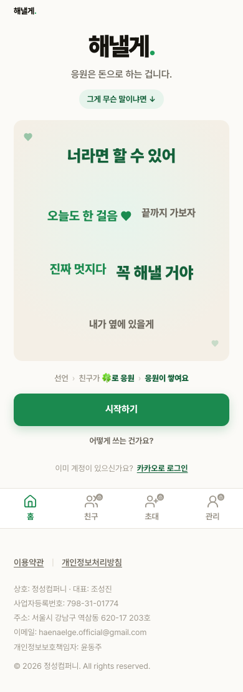
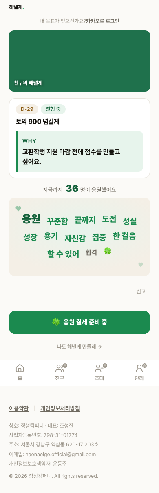
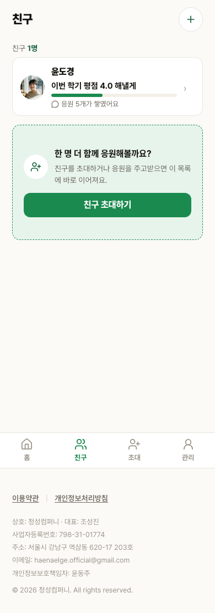
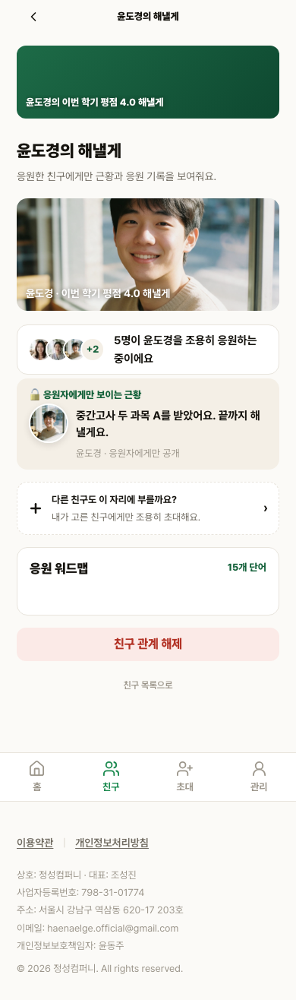
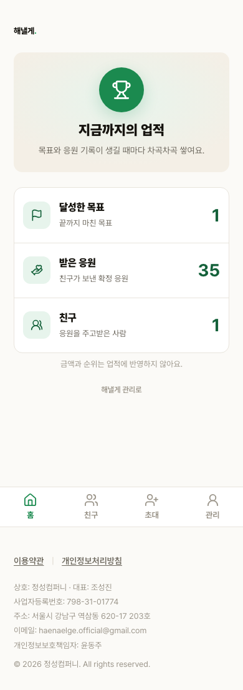
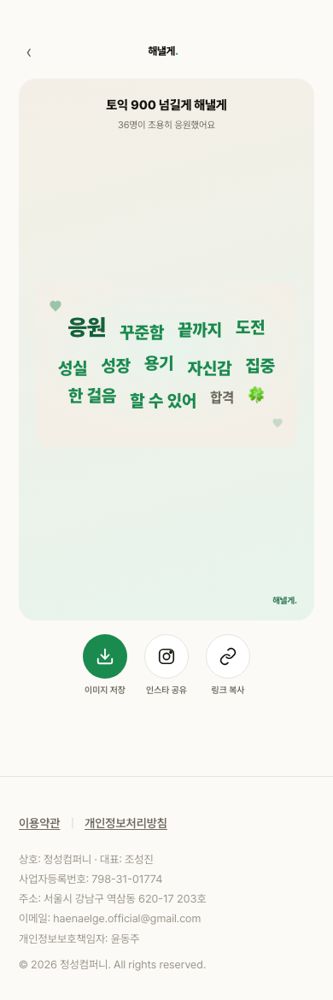
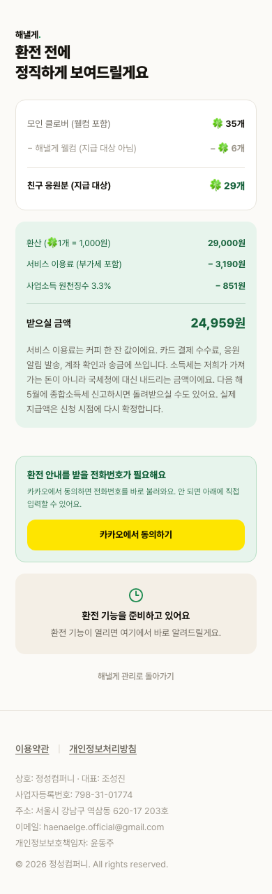

랜딩

390px 로컬 production 전체 스크롤. 워드맵 의미 키워드와 희소·빈 상태의 실제 제품 반영을 검토합니다.
형태소 분석기 추가 대신 `Intl.Segmenter`와 명시적 조사·어미·불용어·정규형 규칙을 채택했습니다. 한 명뿐인 목록은 가짜 항목으로 채우지 않고 초대 CTA를 붙였습니다. 목표 0개와 응원 0건은 각각 목표 만들기와 공유·친구 보기로 이어집니다.







